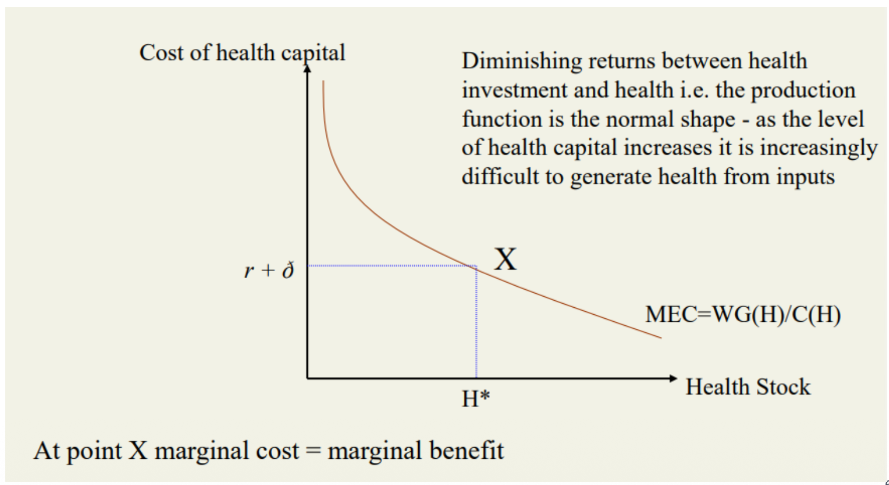

7.1 — The Grossman Model
Chapter 7: Health Economics — Theory, Systems, and the Cost of Aging
Why Does Healthcare Need Its Own Economics?
Healthcare markets break the normal rules of economics. In a normal market, like buying an apple, everything is simple. But healthcare is highly complex because of three massive problems: uncertainty (you never know when you will get sick or hit by a car), information asymmetry (doctors know everything, and you know nothing about your own disease), and externalities (when you get a vaccine, you magically protect the people standing next to you).
In 1963, a genius economist named Kenneth Arrow wrote a famous paper proving that because of these three problems, normal free markets simply do not work for healthcare. If the government doesn't step in, people will die or go bankrupt. This is exactly why every government in the world heavily controls hospitals and doctors.
17.2%
US health spending as % of GDP
11.2%
OECD comparable country average
2.5×
US per capita vs. OECD average
Arrow (1963) — Why Health Markets Fail
Kenneth Arrow listed five major reasons why a normal, free-market strategy causes healthcare to crash:
🎲 Uncertainty
Sickness is totally unpredictable. You cannot plan to break your leg next Tuesday. Also, when you do break it, you have no idea if the doctor is actually good or bad before they operate.
🔍 Information Asymmetry
Doctors hold a massive secret advantage. They know exactly what is wrong with you, and you don't. The horrific problem is that the doctor acts as your "helper" but also acts as the "salesman" getting paid for the surgery.
🌍 Externalities
If I get a vaccine to protect myself, I also magically protect you by not spreading the virus. Because I only care about myself, I usually don't buy enough vaccines for the whole city. The free market fails to protect the public.
🏥 Missing Competition
It takes 10 years to become a doctor, and the government strictly controls who gets a license. Because it is so hard to enter the market, doctors face almost zero competition. This lets them charge incredibly high prices.
Arrow, K.J. (1963). Uncertainty and the Welfare Economics of Medical Care. AER, 53(5).
The Grossman Model (1972) — Health as Durable Capital
Michael Grossman completely changed how economists think. He said: Nobody actually wants to go to the hospital. Going to the hospital is painful and boring! People do not want "healthcare", they just want health. The doctor is simply a tool we use to get healthy. Our desire for doctors is what we call a derived demand — we only demand the doctor because we demand the health.
Grossman treats your body like a machine (a durable capital stock). This body produces a wonderful thing called "healthy time". Having a lot of healthy time is amazing for two reasons:
🛋️ The Happiness (Consumption)
Healthy time goes straight into your happiness equation. You simply feel good when your body works. Being sick in bed ruins your day, even if you are a billionaire. This is the consumption reason.
💼 The Money (Investment)
Healthy time allows you to go to work and make money. If you are sick for a month, you lose a month of salary. Taking medicine is an investment that protects your wages.
| The Old Idea | Grossman's Genius Idea | Why It Matters | |
|---|---|---|---|
| What is health? | A simple feeling that makes you happy. | It is a biological machine ($H_t$) that produces free time ($h_t$). | Health gives you both happiness AND money. |
| Role of doctors | People randomly decide to buy it. | Doctors are just mechanics fixing your machine so you can work. | You must calculate the cost of the doctor vs. your lost salary. |
| Your Job | You passively wait for sickness. | You actively build your own health like a factory boss. | Explains why rich people buy better food and go to the gym. |
| Why buy care? | Because you are forced to. | Because you want the health it produces. (Derived demand) | Makes health economics mathematically logical. |
Grossman Model — The Math (Formal Framework)
You want to have the highest possible happiness across your whole life. However, your happiness is limited by your money, your age, and how fast your body breaks down.
Your Ultimate Goal (The Objective Function):
$U = U\bigl[u_t(c_t, H_t);\; u_{t+1}(c_{t+1}, H_{t+1});\; \ldots;\; u_n(c_n, H_n)\bigr]$
Where $c_t$ = buying nice things today, and $H_t$ = feeling healthy today.
The Biological Machine (Capital Accumulation):
$H_{t+1} = H_t + I_t - \delta_t H_t$
Tomorrow's Health = Today's Health + (Gym & Medicine) − (Getting old and destroying cells)
How to create health (Investment Function):
$I_t = I(M_t, TH_t;\; E_i)$
Where $M$ = doctors, $TH$ = time spent resting/running, and $E_i$ = your education level (smart people understand diets better).
The destruction rate ($\delta_t$) gets much worse as you grow older. When you are 20, your body easily repairs itself. When you are 80, your body destroys itself very fast, making it incredibly expensive and exhausting to stay healthy.
Solving the Model — The Balancing Act
To find the perfect level of health, Grossman uses human capital theory. People buy health just like a factory buys a new machine. You pay a large cost today (buying medicine and suffering at the gym), but you get a massive benefit tomorrow (you can work harder and earn more salary without dying).
The Final Goal (Optimisation):
$\max \sum_{t} \delta^t \, U(H_t, Y_t)$
Subject to the machine equation ($H_t$), and your salary equation:
$Y_t = p_t \cdot w_t + (1 - p_t) \cdot b_t$
Where $p_t$ = chance of being healthy, $w_t$ = full salary, and $b_t$ = the tiny sick pay you get when you stay in bed.
The Magic Rule (Grossman, 1972):
You must keep buying health until the cost of buying matches the profit you make from it:
$r + \delta = w \times \frac{\text{bonus profit from being healthy}}{\text{price of the medicine}}$
- The Cost (Left side): The bank interest rate ($r$) plus your body's destruction rate ($\delta$). This is simply how expensive it is to keep your body alive for one extra year.
- The Profit (Right side): Your salary multiplied by the power of the medicine. If you have a very high salary ($w$), you will buy a massive amount of health, because staying in bed ruins your giant income.
- The power of medicine drops quickly. If you are dying, one pill saves your life (huge profit). If you are an Olympic athlete, taking 10 extra pills does absolutely nothing for you.

This graph proves how we choose our health. The falling curve represents your profit (which drops as you get healthier). The flat line represents your cost ($r + \delta$). You stop buying health exactly at point X, where your profit perfectly matches your cost.
Grossman Model — Real World Proof
The beauty of this model is that it perfectly predicts how real humans behave when the world changes around them:
| What Happens? | The Hidden Math | The Real World Result |
|---|---|---|
| ↑ You Get Older | $\delta_t$ rises rapidly → The biological cost of staying alive ($r + \delta_t$) becomes too high to pay. | Old people are sicker. They naturally decide to carry a smaller stock of health, because repairing a dying machine is too expensive. |
| ↑ You Get Smarter | Better brain → You cook healthier food and understand doctor orders perfectly. | Smart people live longer. Highly educated citizens naturally build much bigger health stocks. |
| ↑ Hospital gets expensive | The price of medicine ($M$) explodes → Buying health becomes financially terrible. | People stop going to the doctor. A very simple, normal market reaction. |
| ↑ You get a massive promotion | Your salary ($w$) becomes huge → Sickness costs you thousands of dollars a day in lost work. | Rich people are incredibly healthy. It makes perfect financial sense for them to invest thousands in private doctors and trainers. |
Is Grossman's Model Good?
Grossman created a brilliantly simple and logical idea: we treat our bodies exactly like a businessman treats a factory. But is this true in real life?
The Great Strengths:
- It perfectly explains why aging is so expensive. As bodies break down ($\delta_t$), we must sink thousands of dollars into them just to survive one more day.
- It perfectly explains the rich-poor gap. Rich people actively build health to protect their massive salaries.
- It remains the absolute king of health economics. Almost every modern health paper still uses Grossman as its starting point.
The Weaknesses:
- It believes humans are perfectly smart robots. In reality, sick people are scared, emotional, and make terrible decisions.
- It ignores the sneaky doctor. Doctors can easily trick you into buying surgeries you don't need (information asymmetry).
- It thinks health acts like math. In reality, you can eat perfectly and run every day, and still randomly get a deadly disease.
Unusual Features of Health Demand
When we look at the real world, the demand for health acts very strangely compared to buying cars or televisions:
−0.2
Price stiffness (inelastic)
>1.0
Country-level luxury effect
≈1.0
Individual normal effect
- Derived demand: People demand health to feel good and work, they don't actually want the doctor.
- Supplier-induced demand: The doctor can secretly push up your demand. If a doctor wants more money, he just lies and tells you to buy three useless tests, and you listen to him because you are scared.
- It is "Inelastic": The price elasticity is extremely low ($-0.2$). Even if the hospital doubles its prices, people who are dying of a heart attack must still pay. They cannot say "no".
- The Aggregation Mystery: At a personal level, health acts like a normal good ($\approx 1.0$). But when you look at whole countries, health acts like a super-luxury good ($>1.0$). This happens because rich countries tend to invent incredibly expensive, magical new technologies like robot surgery, which artificially blows up the national budget.
Chapter 7.1 — The Grossman Model:
- Arrow (1963): The normal free market crashes in healthcare because of randomness, secret doctor knowledge, and externalities. But remembers, it is NOT a public good.
- Grossman (1972): You don't want doctors, you want health. Health is a biological machine you build. As you age, the destruction rate ($\delta_t$) explodes.
- Equilibrium: $r + \delta = w \times \frac{Bonus}{Cost}$ — You buy health until the bank cost perfectly matches your salary protection.
- Death isn't random here, it's a math choice. Death = $H < H_{\min}$.
- Health demand is very stiff (inelastic) and acts like a massive luxury good when an entire country gets richer.